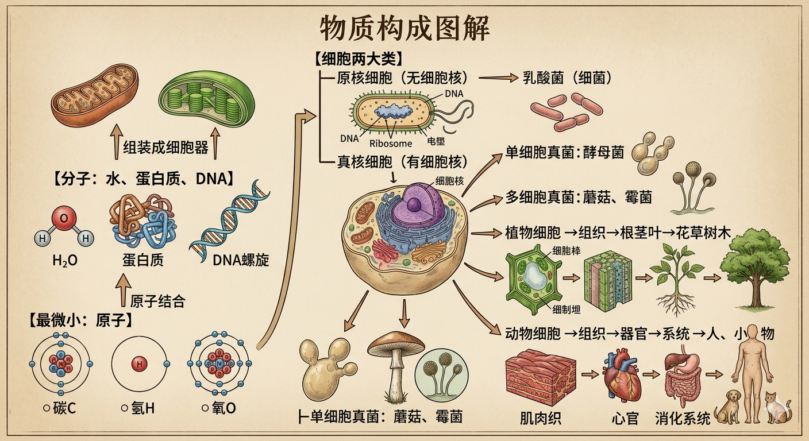

从微观到宏观，探索生命的组织方式
生命是一个复杂而精妙的系统，从最基本的原子到整个生物圈，存在着多个结构层次。每一层都建立在前一层的基础之上，展现出生命的有序性和复杂性。
本图解将带您了解生命系统的完整结构层次，理解物质如何组织成生命，以及各层次之间的相互关系。

图：生命系统从微观到宏观的完整结构层次与物质构成
质子、中子、电子
碳(C)、氢(H)、氧(O)、氮(N)
水、葡萄糖、氨基酸
蛋白质、核酸、多糖、脂质
线粒体、叶绿体、细胞核
生命的基本单位
上皮、肌肉、神经组织
心脏、肺、肝脏、大脑
消化、呼吸、神经系统
完整的生命个体
同一物种的个体群
森林、草原群落
生物群落 + 无机环境
所有生态系统的总和
占细胞质量的70-90%，是生命活动的介质
生命活动的主要承担者
遗传信息的携带者
主要的能源物质
重要的储能和结构物质
维持生命活动的必需元素
细胞是生命结构和功能的基本单位，所有生命活动都在细胞中进行。细胞学说指出：
每个层次都具有下一层次所不具备的新特性，这种现象称为"涌现"。例如：
整体大于部分之和。高层次的特性不能完全从低层次推导出来，需要研究各层次之间的相互作用和组织方式。
从佛学的角度看，生命系统的层次结构体现了"缘起"的深刻道理：
理解生命的结构层次，不仅帮助我们认识自然，更能领悟佛法中"诸法因缘生，诸法因缘灭"的真理，培养对生命的敬畏和对众生的慈悲。